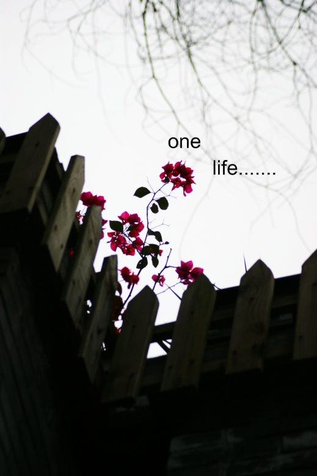
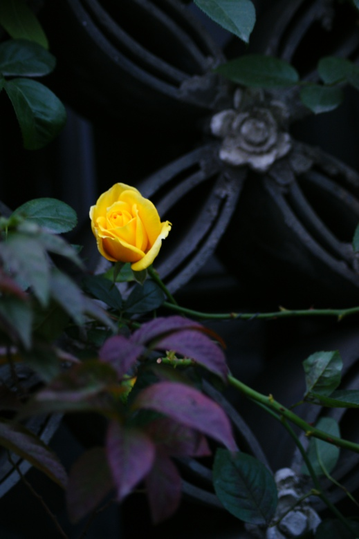
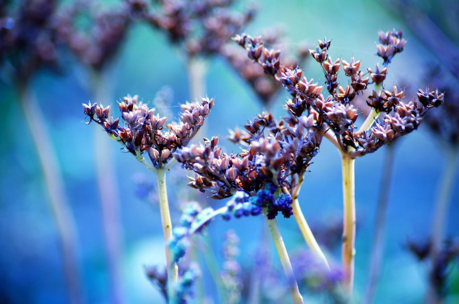
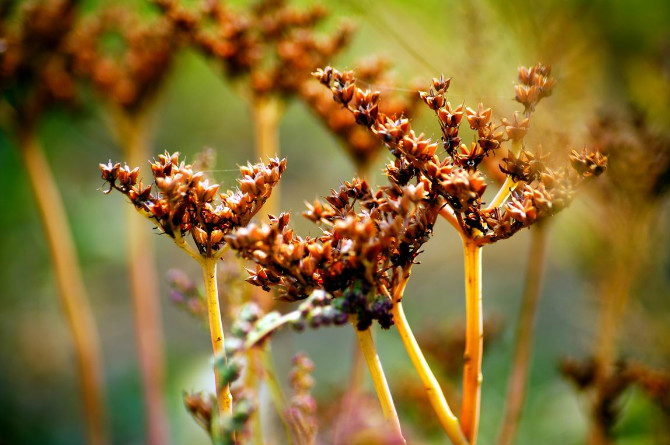
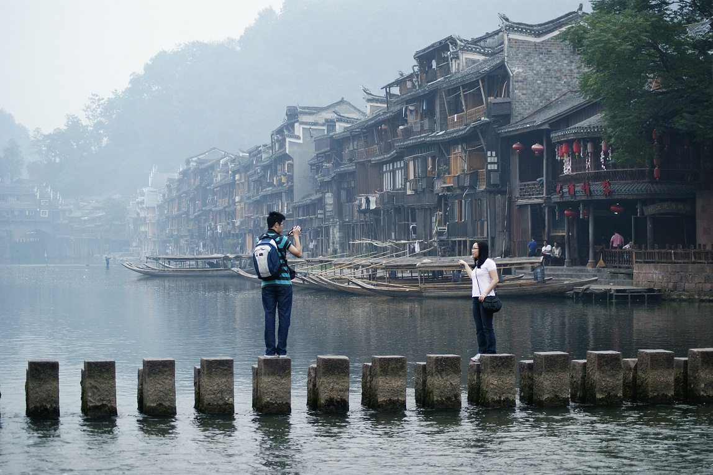

我们都是初学的，首先要做的就是熟悉你的相机。
如何熟悉？
所有设置你都知道吗？你拍摄时，会多快速变换一个设置？
第一，重要的白平衡的调试。我们分三种调试。
1，早、午间、半晚的三次专业调节。这个是给大景别和专业摄影拍摄时必须遵守的规定。
2、自动白平衡，这是入门级初学者最方便的。但是也是最有效的。
3、刻意白平衡，也叫扭曲白平衡。是M档经常配合的一种自我创作用。
建议，2、3种大家可以多练习。尤其3在自我创作上会有很大的潜质。
案例分析：
这张就是使用了扭曲的白平衡，已达到蓝色天空的效果。。。很简单的。大家都可以试试。
第二，如何断定自己的片子是好片子。
相信自己的能力，自信是你必须要遵守的。构图、色彩、曝光无非这几种方式罢了。构图就需要学习黄金分割这个摄影必须遵守的黄金定律，这里不提。很多书都有提及。色彩的饱和，我们可以看见很多人都可以拍出那么色彩绚丽的片子，为什么自己很难。其实都在你相机里呢。看看你相机的风格设置，里面有种叫做自我设定的选项，区里面看看，白平衡敏感，色彩饱和，锐化什么都有。你需要就调试。但是过头了就不好了。很多入门和中级相机都自带了很多设置，多使用，不要一味的只用标准。那你就真的标准了。
案例分析，色彩的调节很重要。

这张很明显鲜花的处理在相机里设置后，就会出现突出红色通道的效果。这就是单反的美丽。
这是设置部分，其实很简单，没有那么难的。色彩就是一道熟悉的墙。不要被那些参赛作品骗了，其实你也可以达到的。
第三，照片是为了突出主体，介绍你要表达的感情。
在摄影中，我们有前景、中景、背景。如何突出主题，表现方式很重要。但是主要就是明暗、虚实等。
案例表现：

这张就是用了颜色和虚实，前景和背景都模糊了。这样完全表达了黄色的蔷薇花。其实很简单，突出了你要表现的什么就够了。就像你第一眼看见就注意了黄色。这就是突出变现主体。
第四，档位的选择非常重要。
你拍摄用什么档位？p、a、s、m还是自定义？不要小看这几个档位。掌握它们你才会变成高手哦。
当你构图色彩都上去了，曝光技术才是真正让你成为高手的关键。
推荐档位练习：a和s。这两个档位非常实用。也是很多高手常用的。
p档位基本我们叫自动档，如果你遇见需要长时间连拍，比如出新闻，这个档位就是必须使用的。
a和s档位需要你的长期练习。如何练习呢？
摄影的人都会有个小本子，记录自己满意的天气和曝光值。记录什么？就是记录这两个档位的值。除了iso这个我们通常指在100和400之间，主要记录的就是这个数据。时间久了，就成为你的潜意思，看见景物和光就马上可以调节出来。这是你必须要必备的东西。小小的本子大用处哦。
m档位，夜拍和自由创作档位，这个档位很好用，因为特效都在这里，但是这需要你有很长时间的经验后才会很好的掌握，不建议入门用它来拍摄，你会搞混曝光和快门的关系。但是夜景可以使用。
档位的准确使用对你进步是个最大的前提。
第五，一个景物，别忘了多曝光一张其他的
我们去一个景点，拍完了自己喜欢的一张就跑了，其实千万不要错过用其他的白平衡，或者换个方式再去曝光。这对你以后创作是个前提的铺垫。
要经常一个景物，曝三张。第一张正常的，第二张创作的，第三张黑白的。
之间的关系大家自由掌握。但是这就是快速成长的路。
案例分析：


花椒花，两种曝光是基本的。都可以出来很不错的。
第六，前期能做到的千万不要留给后期。
前期能做到的千万不要留给后期，别忘记一句话，你是摄影师。不是做后期的。
最后的一些提及：
人物摄影在旅游摄影里尽量变成人文去拍摄，因为人像摄影不是一个人能完成的，他需要灯光和化妆还有很多的外界条件，所以多拍摄人文比人像好。人像留在家里都可以。
被拍烂的地方减少拍摄过程，多注意细节。比如凤凰古城，这类地方，基本都被摄影的拍烂了。所以创作就需要你来了，记住城市的基础除了建筑还有人。
案例分析，用人物表达凤凰。

用人物去表达凤凰的另类感觉，这张是在凤凰偷拍的，用了油画手法，所以你们看到了另类的凤凰，一张画。
总结：感谢您的阅读，最后送给你的是我们摄影人的术语：出片量决定你的价值。
如果您想成为摄影高手，出片量就是决定你的价值。你懂了。这是需要片子喂出来的，现在不是胶卷了，所以不要吝啬你的快门，想拍就拍，希望大家都是自己心目中的高手。
保持风格，积极面对失败的作品，认真研究。一看，二踩点，三思考，四才是拍摄。